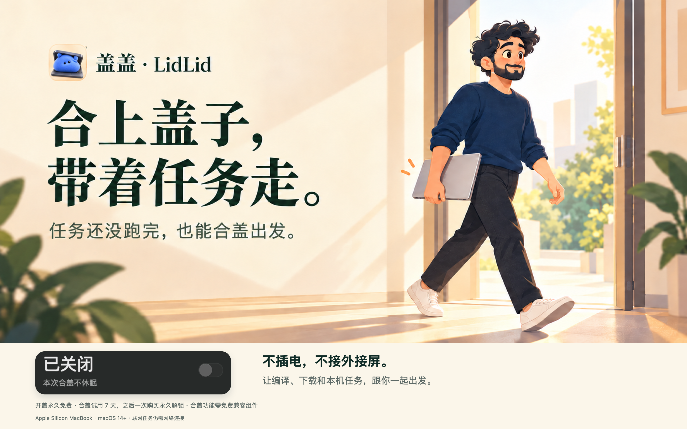
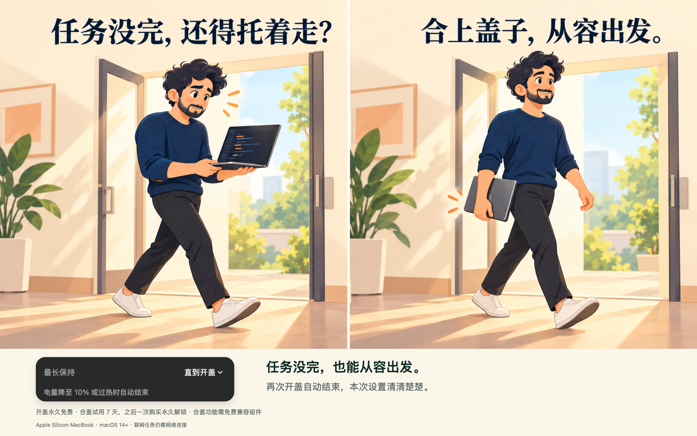
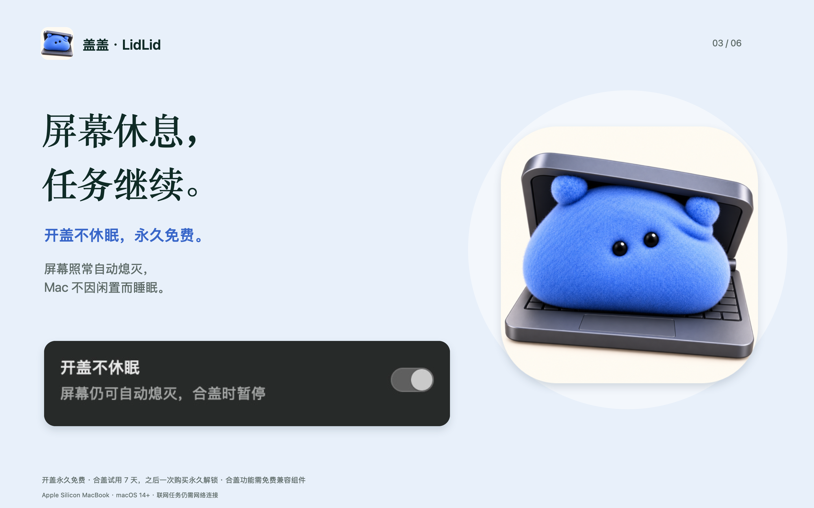
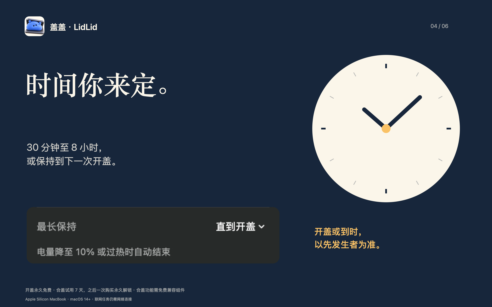
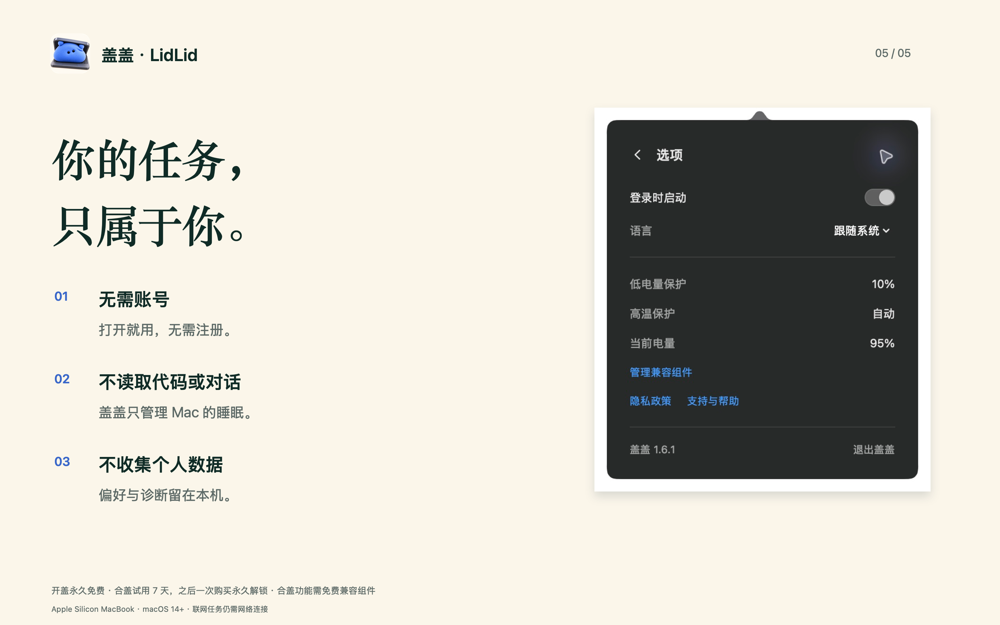
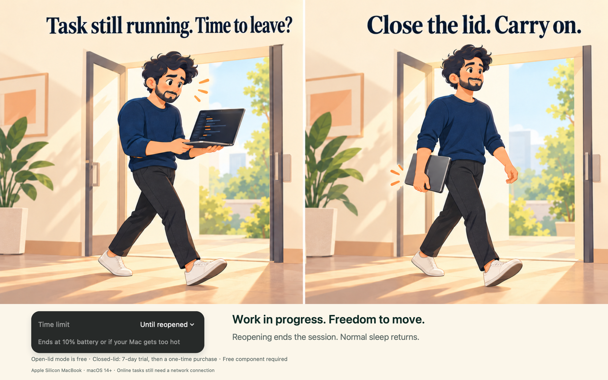
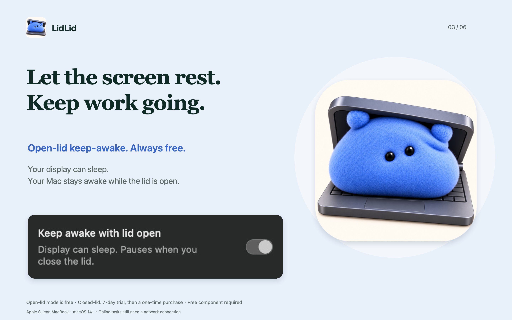
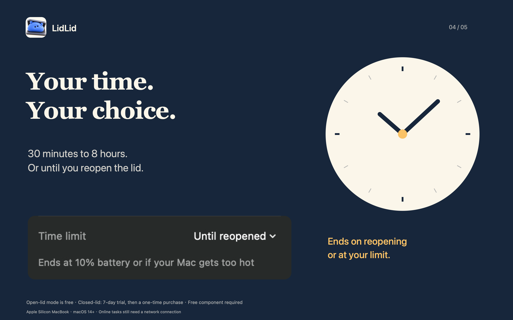
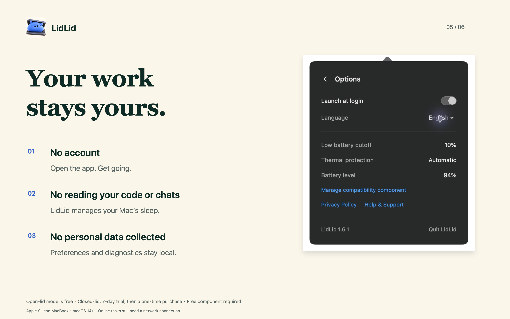

名称 / Name
盖盖：MacBook 合盖不休眠16 characters

1.6.1 · 构建 15 · 中英文文案与真实界面截图

01 · 2880 × 1800 · PNG ↗
02 · 2880 × 1800 · PNG ↗
03 · 2880 × 1800 · PNG ↗
04 · 2880 × 1800 · PNG ↗
05 · 2880 × 1800 · PNG ↗盖盖：MacBook 合盖不休眠16 characters
合上电脑，从容出发，让任务继续15 characters
任务还没跑完，也能合盖出发。用盖盖让 MacBook 合盖不休眠，无需插电或外接屏。再次开盖，自动恢复正常休眠设置。58 characters
保持唤醒,后台运行,编译,下载,渲染,菜单栏,定时,防睡眠,开发,任务,熄屏94 / 100 bytes
合上盖子，带着任务走。 Codex、Claude Code 还在工作，下载或编译还没结束，你却已经要出门了。 盖盖让 MacBook 合盖不休眠，让正在进行的本机任务继续运行，不必托着一台打开的电脑走来走去。无需插电，也无需外接显示器。再次开盖，自动恢复正常休眠设置；下次需要时再开启。 轻巧的菜单栏工具 • 适合 AI 编程、编译、渲染和下载等任务。 • 可定时 30 分钟至 8 小时，或保持到开盖；开盖或到时，以先发生者为准。 • 开盖不休眠永久免费，屏幕仍可自动熄灭。 • 电池供电时电量降至 10%，或系统报告高温时，自动结束合盖模式。 • 支持登录时启动、中英文。无需账号、无广告或追踪，不读取代码或对话；偏好与诊断留在本机。 先试用，再决定 免费兼容组件就绪后，可主动领取 7 天合盖功能试用。之后可通过应用内购买一次永久解锁，不自动续费，支持恢复购买。试用到期仅限制新开启，已开启的本次合盖模式按原设置结束。 使用条件 需要 M 系列 MacBook 和 macOS 14 或更新版本，不支持 Intel Mac。完整合盖功能首次使用需独立安装免费的「盖盖兼容组件」，并按 macOS 提示授权；开盖功能无需组件。请断开外接屏后使用合盖功能。联网任务仍需网络；主动让 Mac 睡眠前，请先关闭合盖模式。564 characters
开盖不休眠永久免费。合盖功能可试用 7 天，支持一次购买永久解锁及恢复购买。试用到期不打断本次会话，仅限制新开启的合盖会话。62 characters
https://lidlid.vercel.app/
https://lidlid.vercel.app/support/
https://lidlid.vercel.app/privacy/
 01 · 2880 × 1800 · PNG ↗
01 · 2880 × 1800 · PNG ↗
02 · 2880 × 1800 · PNG ↗
03 · 2880 × 1800 · PNG ↗
04 · 2880 × 1800 · PNG ↗
05 · 2880 × 1800 · PNG ↗LidLid: Closed-Lid Keep Awake29 characters
Close the lid. Carry on.24 characters
Work still running? Close your MacBook and carry on. No charger or external display needed. Reopening restores normal sleep behavior.133 characters
clamshell,sleep,laptop,background,timer,build,download,render,menubar,awake,screen,macbook90 / 100 bytes
Close the lid. Carry on. Codex or Claude Code is still working. Your build or download isn't finished. But you need to go. LidLid keeps your MacBook awake with the lid closed so local tasks can keep running as you move. No charger or external display needed. Reopen your MacBook to restore normal sleep behavior. Switch it on again for your next closed-lid session. Small controls for work in progress • For coding tasks, builds, renders and downloads. • Set 30 minutes to 8 hours, or keep going until you reopen. Ends on reopening or at your limit, whichever comes first. • Open-lid keep-awake is always free. Your display can still sleep. • Closed-lid mode ends at 10% battery while on battery, or when macOS reports serious thermal pressure. • Optional launch at login. English and Simplified Chinese. • No account, ads or tracking. No reading your code or chats. Preferences and diagnostics stay on your Mac. Try closed-lid mode for 7 days Set up the free component, then claim your trial when ready. Choose a one-time in-app purchase for lifetime access afterward. No automatic renewal. Expiry blocks new sessions; your current session finishes under its original settings. Restore Purchases is supported. Before you start Requires an Apple Silicon MacBook and macOS 14+. Intel Macs are not supported. Full closed-lid mode needs the separately installed, free LidLid Compatibility component and approval through macOS. Open-lid mode needs no component. Disconnect external displays before using closed-lid mode. Online tasks still need connectivity. Turn off closed-lid mode before choosing Sleep.1607 characters
Open-lid keep-awake is always free. Try closed-lid mode for 7 days, then unlock it permanently. Expiry blocks new sessions without interrupting your current session. Restore purchases is supported.197 characters
https://lidlid.vercel.app/en/
https://lidlid.vercel.app/en/support/
https://lidlid.vercel.app/en/privacy/